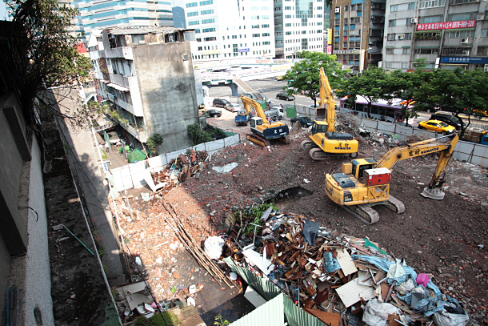

都更訊息
臺北市政府核准「永春都更案」拆除執照
【臺北市訊】「永春都更案」同意戶表達回家訴求，市府業已核定更新計畫並核准拆除執照，期協助住戶早日完成更新重建
有關「永春都更案」同意戶，表達回家是唯一的目標等訴求，臺北市都市更新處表示本案業於104年1月29日核定更新計畫，臺北市建築管理工程處並於104年5月28日核發拆除執照，以協助住戶早日完成更新重建目標。
位於北市信義區忠孝東路五段與松山路交叉口之「永春都更案」，前於94年2月16日及97年9月9日核定在案，係採全區重建方式，惟部分所有權人有不同主張，爰實施者於102年4月18日擬具變更為「部分重建」及「部分整建」兩區段之事業計畫向市府申請報核，市府爰依都市更新條例等相關規定，於102年8月26日至9月28日舉辦公開展覽、102年9月12日舉辦公辦公聽會、103年4月23日提請第164次審議會審議、103年7月25日舉辦聽證，並將容積獎勵、共同負擔及規劃設計等相關討論事項，併聽證紀錄提經103年9月15日第175次審議會審議決議修正後通過，本案計畫業經核定並核准拆除執照。
臺北市都市更新處進一步表示，104年3月市府已承諾協助與本案不同意戶協調，且於104年5月28日核發拆除執照，請實施者於拆除前妥與住戶溝通協調，市府仍願依承諾持續協助協調，以利更新圓滿推動。
< 返回列表